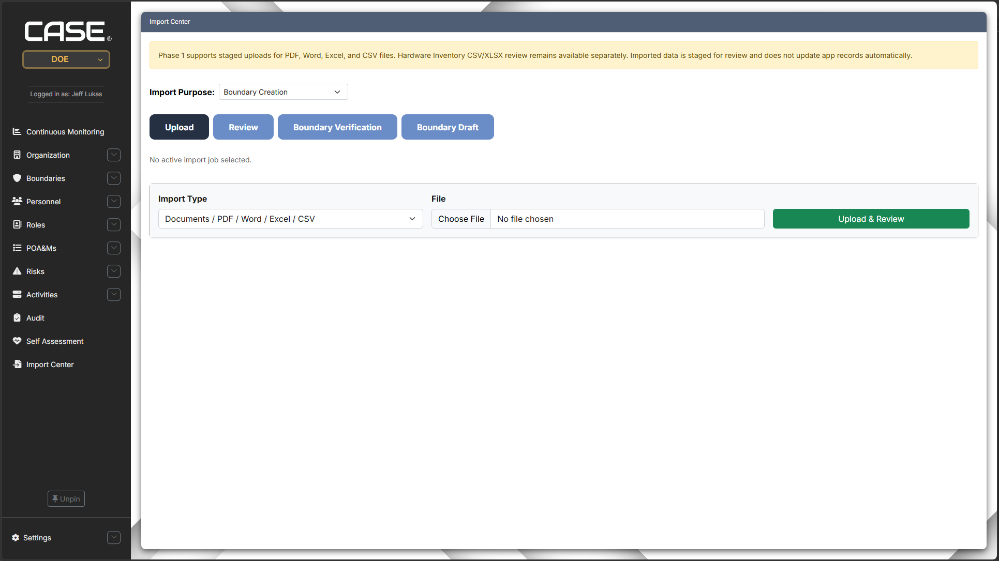
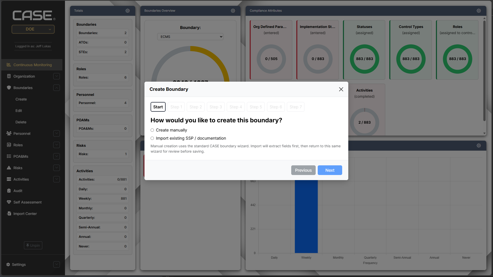

Problem
The challenge
Users needed a faster way to create assessments and authorization boundaries without manually copying information across multiple documents. AI-based import could have introduced accuracy, security, and trust concerns, especially when working with compliance-related information.

Decision
Choosing deterministic automation over AI
Rather than pursuing AI for the sake of automation, I designed a deterministic import pipeline that prioritized security, predictable behavior, and user trust. The system used Python extractors and mapping logic to search documents for known fields, identify boundary information, and prepare data for user review before anything was committed to the application.
Zero Trust
Zero Trust-inspired workflow
The workflow was guided by Zero Trust principles: trust no imported data by default, validate mapped fields, require user verification, and avoid silently creating records from untrusted document content. This helped reduce risk while still automating repetitive setup work.
Solution
Integrated creation wizard
The feature originally started as a standalone import section. During development, I realized that document formats and mappings could expand indefinitely, creating more bugs and edge cases. I redesigned the workflow by integrating import functionality directly into the sidebar creation wizard, where users could import a document, review mapped fields, and manually complete missing information.

Execution
Key contributions
- Built Python-based document extractors and boundary mappers.
- Mapped known document fields into application workflows.
- Used SQL-backed logic to support imported assessment and boundary data.
- Integrated import functionality into the creation wizard to reduce workflow complexity.
- Added user verification before imported information became application data.
- Reduced reliance on AI while still achieving workflow automation.
Assessment Automation
Assessment import workflow
I also built assessment import functionality so users could work through assessment information in one place instead of jumping between multiple documents. This helped centralize the workflow and made the application more useful as a compliance support tool.
Result
Impact
The final feature reduced manual data entry, supported boundary and assessment automation, and preserved user trust through validation and review. It also demonstrated a security-minded approach to automation: improve efficiency without blindly trusting imported data or introducing unnecessary AI-driven risk.
Reflection
What I learned
This project reinforced that automation is strongest when it is predictable, explainable, and designed around user verification. It also strengthened my understanding of secure development decisions, data validation, workflow design, and how Zero Trust principles can influence application features.